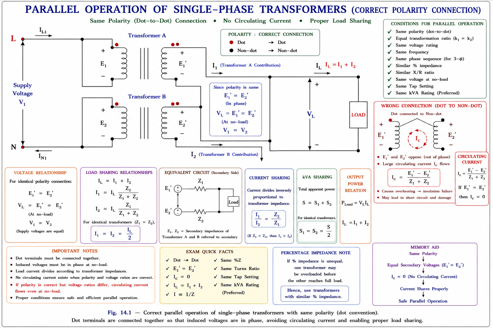
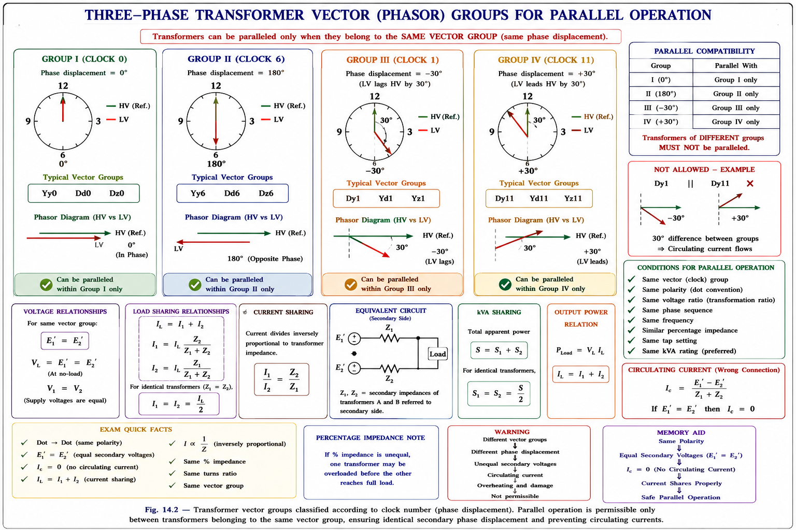
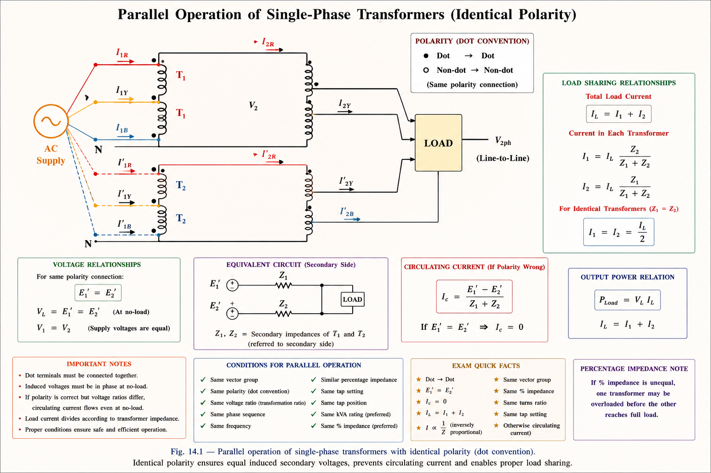
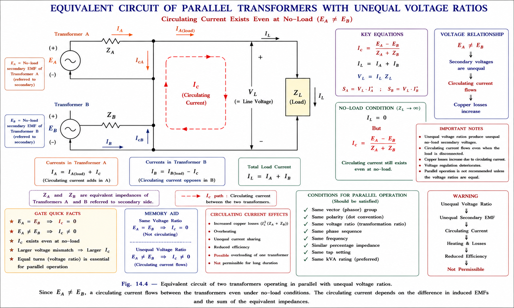
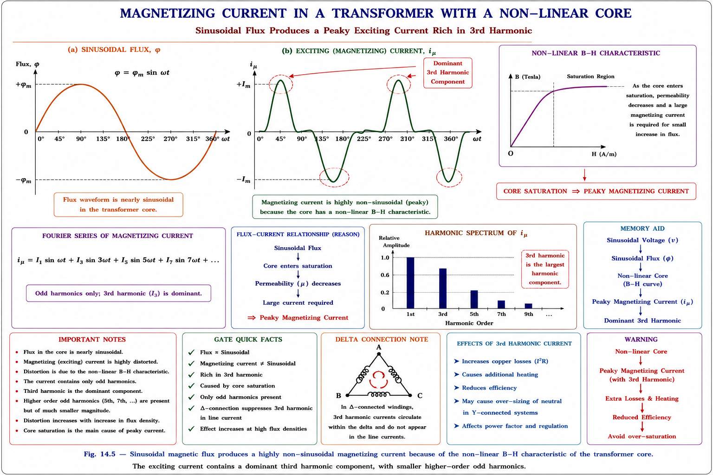
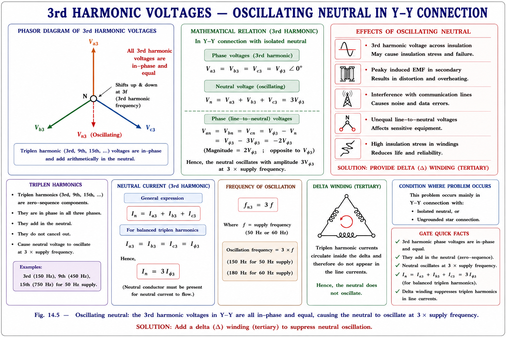
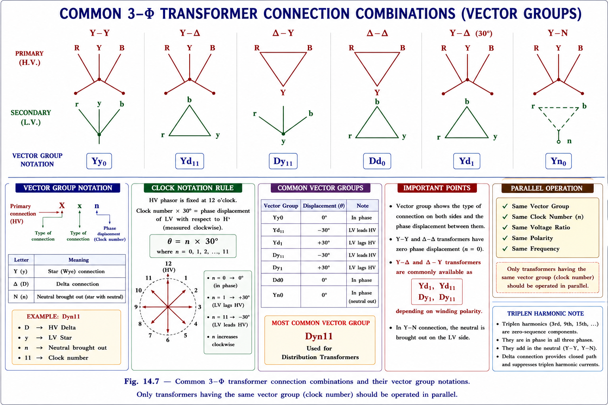

In power systems it is often necessary to connect two or more transformers in parallel — their primaries connected to the same supply bus and secondaries feeding a common load bus. This is done for several practical reasons.[1]
Advantages of Parallel Operation
→Load growth: existing transformer can be retained and a new one added in parallel, avoiding replacement.
→Reliability: if one unit trips, others continue to supply load — no complete blackout.
→Maintenance: one unit can be taken off for maintenance while others carry the load.
→Economy: during light load, one unit can be de-energised saving no-load losses.
→Transport: smaller units are easier to transport than one large unit.
Disadvantages / Caution
→If conditions are not met, large circulating currents flow even at no-load, wasting copper losses.
→Unequal impedance ratios cause disproportionate load sharing — one transformer can overload.
→Wrong polarity connection creates a dead short circuit across both transformers.
→3-φ transformers of different phasor groups cannot be paralleled — 30° phase difference causes very large circulating currents.
💡
Key Concept
The total installed capacity of parallel transformers need not be used fully. What matters is that the load is shared proportionally to their kVA ratings so that neither unit is overloaded while the other runs under-loaded.
4.2
Conditions for Parallel Operation
The following conditions must be satisfied before connecting two (or more) transformers in parallel. They apply to both 1-φ and 3-φ units, with additional conditions for 3-φ only.[1][2]
Group A — For Both 1-φ and 3-φ Transformers
⛔
Condition 1 — Same Polarity (MUST)
Same polarity means the dots (or voltage polarities at corresponding terminals) must be connected together: dot-to-dot and non-dot-to-non-dot. If polarity is reversed, the two secondary EMFs add together in the loop, creating a dead short circuit. This condition is ABSOLUTE — violation results in catastrophic failure.

Fig 4.1 — Correct parallel connection with same polarity. Dots (instantaneous positive terminals) must be connected together.
Condition 2 — Equal Voltage Ratios / Same Voltage Rating (MUST)
The turns ratios (and hence rated secondary voltages) of the transformers to be paralleled must be equal. If \(E_A \neq E_B\), a circulating current flows in the loop formed by the two secondaries even at no-load:
\[ I_{circ} = \frac{E_A - E_B}{Z_A + Z_B} \]
This circulating current is wattless (flows in the loop, not the load) and causes unnecessary copper losses and possible overheating. A small difference may be tolerated if unavoidable, but ideally both transformers must have the same voltage rating.
✅
Condition 3 — Same Per-Unit Impedance (Desirable)
For proportional load sharing (each transformer carries load in proportion to its kVA rating), the per-unit (pu) impedances of all transformers on a common base must be equal. If pu impedances differ, the transformer with lower pu impedance carries a disproportionately higher fraction of the total load and may reach full load first — causing the combination to be limited below its total rating.
✅
Condition 4 — Same X/R Ratio (Desirable)
For both transformers to operate at the same power factor as the load, their impedance angles (X/R ratios) must be equal. If X/R ratios differ, the transformer with a higher X/R ratio will operate at a lower power factor than the other, and the currents drawn by the two will be out of phase with each other. This leads to one transformer supplying reactive power to the other, reducing overall efficiency.
Group B — Additional Conditions for 3-φ Transformers Only
⛔
Condition 5 — Same Phase Sequence (MUST)
The phase sequence of the secondary voltages of both transformers must be the same (e.g., both R-Y-B or both R-B-Y). If phase sequences differ, at every instant there is a voltage difference between the two secondary terminals of the same phase, causing very large circulating currents.
⛔
Condition 6 — Zero Phase Difference / Same Phasor Group (MUST)
There must be zero phase difference between the corresponding line voltages of the two transformers. This means that only transformers belonging to the same phasor group may be paralleled. For example: Yy0 with Yy0, Dd0 with Dd0, Yy6 with Yy6, Yd1 with Yd1 — but NOT Yy0 with Yd1. Changing the sequence of 1° connections gives a 30° lead/lag shift, making parallel operation impossible within the same group.

Fig 4.2 — Only transformers within the same phasor group may be paralleled. Mixing groups introduces 30° or 180° phase differences, causing large circulating currents.
Basis: Nagrath & Kothari [2], §3.10, p.146
#
Condition
Applicability
Status
Effect if Violated
1
Same polarity
1-φ & 3-φ
MUST
Short circuit — catastrophic failure
2
Equal voltage ratios
1-φ & 3-φ
MUST
Circulating current at no-load; copper losses
3
Same pu impedance
1-φ & 3-φ
Desirable
Disproportionate load sharing; overload of one unit
4
Same X/R ratio
1-φ & 3-φ
Desirable
Different pf operation; reactive power circulation
5
Same phase sequence
3-φ only
MUST
Very large circulating currents
6
Same phasor group (zero phase diff.)
3-φ only
MUST
30° voltage difference → large circulating currents
4.3
Load Sharing — Equal Voltage Ratios (\(E_A = E_B\))
When two transformers A and B have equal voltage ratios (and hence no circulating current at no-load), both are represented by their Thévenin equivalent with a common voltage source. The equivalent circuit reduces to two impedances \(Z_A\) and \(Z_B\) in parallel feeding the common load \(Z_L\).[1][2]

Fig 4.3 — Equivalent circuit for two transformers in parallel with equal voltage ratios. \(Z_A, Z_B\) are referred-to-secondary equivalent impedances.
Basis: Nagrath & Kothari [2], §3.10, p.147
Derivation of Load-Sharing Equations
Since \(E_A = E_B\), there is no circulating current at no-load. When load \(Z_L\) is connected, applying KVL to the mesh formed by \(Z_A\) and \(Z_B\):
Taking complex conjugate and multiplying by terminal voltage \(\vec{V}\), the complex power shared by each transformer is:
Complex Power — Load Sharing (2 Transformers, Equal Ratios)
\[ S_A^* = \frac{Z_B}{Z_A + Z_B} \times S_L^* \]
\[ S_B^* = \frac{Z_A}{Z_A + Z_B} \times S_L^* \]
\[ S_L = S_A + S_B \quad \text{(complex power balance)} \]
Note: \(Z_A, Z_B\) must be in actual ohms (not per-unit)
⚠️
Important — Impedance Base Conversion
If pu impedances are given on individual transformer bases, they must be converted to a common base before using the load-sharing formulas. The actual (ohmic) impedance is:
\[ Z_j(\Omega) = Z_{j(pu)} \times Z_{j(base)} = Z_{j(pu)} \times \frac{V_{rated}^2}{S_{rated}} \]
4.4
Load Sharing — \(n\) Transformers in Parallel
The two-transformer result extends naturally to \(n\) transformers. Each transformer \(j\) has an equivalent impedance \(Z_j\) (all referred to the secondary). Since all secondary EMFs are equal (equal voltage ratios), the load sharing is governed by:[2]
Current distributes inversely proportional to impedance: transformer with lower impedance draws more current and carries more load. This is the fundamental reason why equal pu impedances are needed for equal load sharing — if \(Z_A < Z_B\), transformer A reaches full load first, limiting the total output below \(S_A + S_B\).
When the transformer impedances are expressed in per-unit (pu), the load sharing analysis becomes very convenient. The pu loading of each transformer (i.e., the fraction of its rated capacity it carries) is inversely proportional to its pu impedance on its own base.[2]
Per-Unit Load Analysis — Derivation
\[ S_j^* \propto \frac{1}{Z_j(\Omega)} \quad \text{[from load sharing formula]} \]
Since \[ Z_j(\Omega) = Z_{j(pu)} \times Z_{j(base)} \]
And \[ Z_{j(base)} = \frac{V_{rated}^2}{S_{rated}} \]
Therefore: \[ S_j^* \propto \frac{S_{j(rated)}}{Z_{j(pu)}} \]
In pu on transformer's own base:
\[ S_j^*(pu) = \frac{S_j^*}{S_{j(rated)}} \propto \frac{1}{Z_{j(pu)}} \]
Key result: The transformer with LOWEST pu impedance
carries the HIGHEST fraction of its rated capacity
\(\to\) It reaches Full Load FIRST.
📌
Condition for Proportional Load Sharing (Equal % Loading)
For all transformers to carry the same fraction of their rated capacity (i.e., all at the same % loading), we require:
\[ S_j \propto S_{j(rated)} \quad \Longleftrightarrow \quad \frac{S_j}{S_{j(rated)}} = \text{constant} \quad \Longleftrightarrow \quad Z_{j(pu)} = \text{constant} \]
This is the same pu impedance condition. When pu impedances are equal, both transformers reach full load simultaneously, and the combination delivers its maximum total rated output.
Transformer
Rating (kVA)
\(Z_{pu}\)
Load Carried
Reaches FL First?
A
1000
0.05 pu
Higher fraction
YES — first to overload
B
500
0.10 pu
Lower fraction
No
Example: If Z_A(pu) < Z_B(pu), transformer A carries relatively more load and will be the limiting unit
4.6
Unequal Voltage Ratios (\(E_A \neq E_B\))
When the two transformers have slightly different turns ratios (and hence \(E_A \neq E_B\)), there is a circulating current even at no-load. Under load, the analysis requires two simultaneous mesh equations.[1][2]

Fig 4.4 — Unequal voltage ratios: \(E_A \neq E_B\). Two mesh equations must be solved simultaneously for \(I_A\) and \(I_B\). A circulating current flows even at no-load.
For \(n\) transformers in parallel with unequal voltage ratios, Millman's theorem (also called the parallel generator theorem) provides a systematic, compact method to find the common terminal voltage and individual currents.[2][3]
Millman's Theorem — Formulation
The terminal voltage of the parallel combination is:
\[ V = I_{sc} \times Z_p \]
where the short-circuit current is:
\[ I_{sc} = \sum_{j=1}^{n} \frac{E_j}{Z_j} \]
and the parallel impedance is:
\[ \frac{1}{Z_p} = \frac{1}{Z_L} + \sum_{j=1}^{n} \frac{1}{Z_j} \]
Individual transformer currents:
\[ I_j = \frac{E_j - V}{Z_j} \]
Load current:
\[ I_L = \frac{V}{Z_L} \]
Check: \( I_L = \sum I_j \) \quad (KCL verification)
✅
Verification of Millman's Result
After computing \(V\), always verify:
\[ S_L = V \cdot I_L^* = \frac{V^2}{Z_L^*} = \sum_{j} S_j = \sum_{j} V \cdot I_j^* \]
This cross-checks that complex power balance is maintained.
GATE EE CONCEPTWhy Millman's Method is Preferred in GATE
In GATE numerical problems, when \(E_A \neq E_B\), Millman's theorem reduces the solution to a single-step voltage calculation followed by simple current division, avoiding the need to solve two simultaneous phasor equations. This saves significant time in a timed exam setting. Always convert all impedances to actual ohms using the common base before applying the formula.
4.8
Magnetisation Current Phenomenon in Transformers
The magnetisation (no-load) current of a transformer exhibits important harmonic characteristics that affect the winding connection choice. This is a frequently examined topic in GATE and IES.[2][4]
If the applied voltage to the transformer is sinusoidal, then by Faraday's law the core flux must also be sinusoidal. However, if the magnetisation curve (B-H curve) of the core material were linear, the magnetising current would also be sinusoidal.
In practice, modern transformers are operated with high flux density in the core for economic reasons (to reduce iron volume). This drives the core into deep saturation, making the magnetisation curve highly non-linear. As a result, to maintain a sinusoidal flux, the magnetising current becomes peaky — it must be non-sinusoidal and contain a dominant 3rd harmonic component.

Fig 4.5 — Left: sinusoidal flux waveform. Right: corresponding peaky magnetising current with dominant 3rd harmonic, resulting from the non-linear B-H characteristic at high flux densities.
Basis: Nagrath & Kothari [2], §3.11, p.151
📌
The 3rd Harmonic Problem — Where Can It Flow?
The 3rd harmonic components of the three-phase magnetising currents are all in phase with each other (they are zero-sequence currents). Therefore they can only flow if a zero-sequence path exists in the electric circuit:
3rd Harmonic CAN Flow
→Single-phase transformers in a 1-φ circuit
→3-φ star-connected winding if neutral is connected to source neutral
→Closed delta winding (circulates inside the delta)
→3-φ bank of 1-φ transformers (independent magnetic circuits)
→3-φ shell-type transformer
→5-limbed (or 4-limbed) core-type transformer
3rd Harmonic CANNOT Flow
→Star connection with isolated neutral (neutral NOT connected to source)
→Delta-star connection without delta tertiary
→3-limbed core-type transformer in Y-Y connection without delta tertiary — most common case!
→In these, 3rd harmonic current is suppressed → flux becomes flat-topped
Case A: Star-Star (Y-Y) Connection — 3-Limbed Core
In a 3-limbed core-type transformer with Y-Y connection and the primary star neutral not connected to the source neutral, there is no path for 3rd harmonic magnetising current. The magnetising current remains sinusoidal. However, with a sinusoidal magnetising current, the core flux becomes flat-topped, containing a dominant depressing 3rd harmonic flux component. This flat-topped flux induces a peaky EMF in the windings with a large 3rd harmonic voltage component.[2][4]
⛔
Oscillating Neutral — The Critical Problem
In a Y-Y connection with isolated neutrals, the 3rd harmonic voltages in the three phases are all equal in magnitude and in phase. The neutral point voltage therefore oscillates at the 3rd harmonic frequency. This is called the oscillating neutral (or floating/shifting neutral) problem. Consequence: the three line-to-neutral voltages are unequal and contain large 3rd harmonic components, creating high insulation stress and interference with communication circuits.

Fig 4.6 — Oscillating neutral: the 3rd harmonic voltages in Y-Y are all in-phase and equal, causing the neutral to oscillate at 3× supply frequency. Solution: add a delta winding (tertiary).
Solution: The Delta (Δ) Winding
The standard solution to the oscillating neutral and 3rd harmonic problems is to provide a closed delta winding. This can be:
Benefits of Delta Winding
→Provides a low-impedance path for zero-sequence (3rd harmonic) magnetising currents to circulate inside the delta loop
→Restores the flux waveform to sinusoidal (harmonic variation of flux is restored)
→Eliminates the oscillating neutral problem
→Facilitates single-phase loads (reduces the floating neutral effect)
→Magnetically interlinked — 3rd harmonic flux forms zero-sequence component finding very high reluctance path through air and tank walls
→Magnitude of 3rd harmonic flux very low, but causes tank valve (wall) heating
→Large 3-limbed core TF provided with a copper shield (screen) around the core to minimise 3rd harmonic flux leakage and tank heating
→Can be connected Y-Y without Δ if unbalance is small
→If 5th & 7th harmonics are also objectionable → use 4 or 5 limbed core

Fig 4.7 — Common 3-φ transformer connections. The tertiary delta (dashed) provides a zero-sequence path for 3rd harmonic currents, resolving the oscillating neutral problem in Y-Y cores.
Basis: Nagrath & Kothari [2], §3.11, p.151–155
4.10
Solved Numericals
EXAMPLE 4.1Load Sharing — Two 1-φ Transformers (Standard Textbook Type)
Two 1-φ transformers rated 1000 kVA and 500 kVA respectively are connected in parallel on both HV (11 kV) and LV (400 V) sides. They have equal voltage ratings of 11 kV/400 V. Their pu impedances are \( Z_A = 0.02 + j0.07 \) pu and \( Z_B = 0.0455 + j0.0788 \) pu respectively.
(a) How will the following loads be shared: (i) 360 kVA at 0.9 PF lagging; (ii) 500 kW at UPF.
(b) What is the largest 0.8 PF lagging load that can be delivered by the parallel combination at rated voltage? Determine the load shared and operating PF of each transformer under these conditions.
Solution
Given data: \( Z_A = 0.0728\angle 74.05° \) pu on 1000 kVA base; \( Z_B = 0.091\angle 60° \) pu on 500 kVA base.
Since \(|Z_A| < |Z_B|\), transformer A will go to full load first (lower pu impedance → higher pu loading).
Convert to common base (Select 1000 kVA as common base):
Base Conversion
\begin{align*}
Z_{B(new)} &= Z_{B(old)} \times \left( \frac{\text{Common base}}{\text{B's own base}} \right) \\
&= 0.091\angle60^\circ \times \left(\frac{1000}{500}\right) \\
&= 0.182\angle60^\circ \text{ pu}
\end{align*}
So on common 1000 kVA base:
\[ Z_A = 0.0728\angle74.05^\circ \text{ pu} \quad \text{(unchanged, same base)} \]
\[ Z_B = 0.182\angle60^\circ \text{ pu} \quad \text{(converted to 1000 kVA base)} \]
Part (b) — Maximum Load at 0.8 PF Lagging
Since \(|Z_A| < |Z_B|\), transformer A has higher pu loading \(\to\) A reaches FL first.
At FL: \( S_A = 1000 \text{ kVA (rated)} \)
From load sharing:
\[ S_A = \left| \frac{Z_{B(new)}}{Z_A + Z_{B(new)}} \right| \times S_L \]
\[ \frac{|S_A|}{|S_L|} = 0.7183 \]
So: \( S_L = \frac{1000}{0.7183} = 1391.9 \text{ kVA} \)
For \( S_A = 1000\angle\varphi_A \text{ kVA} \) and \( S_L = 1391.9\angle-36.87^\circ \text{ kVA} \):
\begin{align*}
S_A^* &= 0.7183\angle-3.98^\circ \times 1391.9\angle36.87^\circ \\
&= 1000\angle32.89^\circ \text{ kVA}
\end{align*}
\[ \therefore S_A = 1000\angle-32.89^\circ = 838.1 \text{ kW} + j544.3 \text{ kVAR} \]
\[ \to \text{PF} = \cos(32.89^\circ) = 0.839 \text{ PF lagging} \]
\begin{align*}
S_B &= S_L - S_A = 1391.9\angle-36.87^\circ - 1000\angle-32.89^\circ \\
&= (1113.5 - j835.1) - (838.1 - j544.3) \\
&= 275.4 - j290.8 = 400.1\angle-46.6^\circ \text{ kVA}
\end{align*}
\[ \therefore \text{Maximum load} = 1391.9 \text{ kVA at 0.8 PF lagging} \]
Transformer A carries: 1000 kVA at 0.839 PF lag (at FL)
Transformer B carries: 400.1 kVA at 0.685 PF lag
EXAMPLE 4.2Millman's Theorem — Unequal Voltage Ratios
Two transformers A and B are connected in parallel to a common load \(2 + j1.5\,\Omega\). Impedances referred to secondary are \(Z_A = (0.15 + 0.5j)\,\Omega\) and \(Z_B = (0.1 + 0.6j)\,\Omega\). No-load terminal voltages are \(E_A = 207\angle 0°\,\text{V}\) and \(E_B = 205\angle 0°\,\text{V}\). Find the power output and PF of each transformer.
GATE EETwo transformers in parallel — load sharing conditionGATE 2019
Two transformers of ratings 100 kVA and 200 kVA are connected in parallel. Their pu impedances are 0.04 pu and 0.02 pu respectively (on their own kVA bases). They share a 240 kVA load. Which transformer carries more load per unit of its rated capacity?
100 kVA transformer carries more load per unit (lower pu Z)
✓ 100 kVA transformer: S_pu ∝ 1/Z_pu = 1/0.04 = 25; 200 kVA: 1/0.02 = 50 → both different → 200 kVA carries more load per unit
Both carry equal load per unit
Depends on the load power factor
Key insight: \( S_{j(pu)} \propto 1/Z_{j(pu)} \). The 200 kVA transformer has lower pu impedance (0.02 vs 0.04), so it carries a higher fraction of its rated capacity. It is the limiting unit.
Which of the following pairs of 3-phase transformer connections can be operated in parallel?
Yy0 with Yd1
✓ Yy0 with Dd0 — both in Group I (0° phase shift)
Dy11 with Yd1
Yy6 with Yy0
Rule: Only transformers in the same phasor group can be paralleled. Yy0 and Dd0 both belong to Group I (0° phase displacement).
IES E&T3rd harmonic — oscillating neutral and winding connectionIES 2017
In a star-star connected 3-phase transformer bank, if the neutral of the primary is not connected to the source neutral, what happens to the magnetising current?
Magnetising current becomes peaky, containing 3rd harmonic
✓ Magnetising current remains sinusoidal, but core flux becomes flat-topped with dominant depressing 3rd harmonic flux component
Both current and flux remain sinusoidal
3rd harmonic current circulates in the delta winding
Explanation: In Y-Y with isolated neutrals, 3rd harmonic (zero-sequence) currents cannot flow. So the current is forced to remain sinusoidal, but the non-linear B-H relationship then requires the flux to become flat-topped. This flat-topped flux induces a peaky EMF with large 3rd harmonic voltage, causing the oscillating neutral phenomenon.
IES E&TEqual pu impedance — proportional load sharing proofIES 2015
State and prove the condition for proportional load sharing between two transformers in parallel.
Answer: The condition is that both transformers must have equal per-unit impedances on a common base. Proof: From \(S_j^* = (Z_k)/(Z_j+Z_k) \cdot S_L^*\), the pu loading is \(S_{j(pu)} \propto S_{j}/S_{j(rated)} \propto 1/Z_{j(pu)}\). For \(S_{A(pu)} = S_{B(pu)}\), we need \(Z_{A(pu)} = Z_{B(pu)}\). Under this condition, both transformers reach full load simultaneously, utilising the total rated capacity optimally.
GATE EE CONCEPTPhantom Loading in Parallel Transformer Tests
Phantom loading is a test method where rated current flows through the transformer windings but no actual power is delivered to a load. The two transformers under test are connected in parallel with their secondaries connected in phase opposition — rated current circulates in the loop without consuming full rated power from the supply. This allows testing of parallel operation conditions economically by measuring only the losses, not supplying the full kVA output.
4.12
Miscellaneous Topics — Design & Practical Aspects
Tap Changers
A tap changer adjusts the turns ratio of a transformer without taking it off-line (on-load tap changer, OLTC) or only when de-energised (off-load tap changer). Tap changers are placed on the HV side because it has fewer turns, each turn contributes more change per tap position (with a 100:1 ratio, one turn change on the LV side changes voltage by 1V while one turn change on the HV side changes it by 100V). On-load tap changers require good cooling since switching arcs generate heat.
On-Load Tap Changer (OLTC)
→Can operate under load (costly)
→Requires good cooling — arcing during switching
→Used for voltage regulation under varying load
→Typical range: ±10% in steps of 1.25% or 2.5%
Off-Load Tap Changer
→Must de-energise transformer first (cheap)
→No arcing — simple mechanical switch
→Used for seasonal or long-term voltage adjustment
→Taps placed at centre of winding — axial forces balanced
Core Design — Stepped Core & Cooling
Scaling Laws for Transformers
→If linear dimensions scale by factor \(k\): KVA rating scales as \(k^4\)
→Losses scale as \(k^3\); Surface area scales as \(k^2\)
→Moment of inertia scales as \(k^5\)
→Example: if \(k=3\), KVA = 81×, losses = 27×, surface area = 9× — heat dissipation problem!
→Hence large TF requires forced cooling (ONAN, OFAN, OFAF)
Yes — two-step cruciform for max area, min perimeter
3rd harmonic flux
Can flow easily (independent magnetic paths)
High reluctance path through air/tank in 3-limb
Yoke cross-section
Same as limb
20% higher than limb (to avoid saturation)
Condition 1
Same polarity — dots must connect to dots. ABSOLUTE MUST. Violation = short circuit.
Condition 2
Equal voltage ratios — same turns ratio. MUST. Otherwise circulating current at no-load.
Condition 3
Equal pu impedance. DESIRABLE. Needed for proportional load sharing. \(Z_{pu}\) = const.
Condition 4
Equal X/R ratio. DESIRABLE. Needed for same PF operation as load.
3-φ Only (5 & 6)
Same phase sequence AND same phasor group (zero phase difference). MUST for 3-φ.
Load Sharing Key
Lower pu impedance → higher fraction of rated load → reaches full load first → limiting unit.
🤖 Ask Aarova AI — Transformers
Have a doubt about parallel operation, load sharing, or transformer harmonics? Ask below.
➡️
Coming Next — Chapter 5
Autotransformers — theory, savings in material, conversion of two-winding to auto, advantages and limitations, equivalent circuit, and complete GATE & IES exam concepts.
References & Citations
All technical content is derived from the following standard textbooks. No content is reproduced verbatim — all explanations, examples, numerical values, and diagrams are original to Aarova AI.
[1]Chapman, Stephen J. Electric Machinery Fundamentals, 5th ed. McGraw-Hill, 2012. Chapter 2, §2.9: Parallel operation of transformers, conditions, load sharing.
[2]Kothari, D.P. and Nagrath, I.J. Electric Machines, 4th ed. Tata McGraw-Hill, 2010. Chapter 3, §3.10–3.11: Parallel operation conditions, load sharing with equal/unequal ratios, pu analysis, magnetising current harmonics, oscillating neutral, delta winding necessity.
[3]Fitzgerald, A.E., Kingsley, C. and Umans, S.D. Electric Machinery, 6th ed. McGraw-Hill, 2003. Chapter 2: Transformers — parallel operation, Millman's theorem application, pu system.
[4]IIT Kharagpur NPTEL. Basic Electrical Technology — Lectures 19–24: Transformers. National Programme on Technology Enhanced Learning. Available at: nptel.ac.in. Covers parallel operation, harmonic analysis, and practical transformer design aspects.